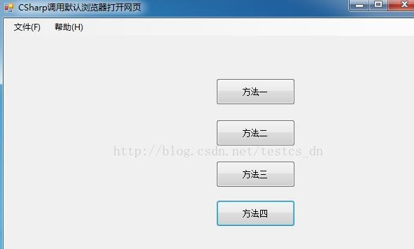

示例界面：

方法一：从注册表中读取默认浏览器可执行文件路径
private void button1_Click(object sender, EventArgs e)
{
//从注册表中读取默认浏览器可执行文件路径
RegistryKey key = Registry.ClassesRoot.OpenSubKey(@"http\shell\open\command\");
string s = key.GetValue("").ToString();
//s就是你的默认浏览器，不过后面带了参数，把它截去，不过需要注意的是：不同的浏览器后面的参数不一样！
//"D:\Program Files (x86)\Google\Chrome\Application\chrome.exe" -- "%1"
System.Diagnostics.Process.Start(s.Substring(0, s.Length - 8), "http://blog.csdn.net/testcs_dn");
}方法二：
private void button2_Click(object sender, EventArgs e)
{
//调用系统默认的浏览器
System.Diagnostics.Process.Start("explorer.exe", "http://blog.csdn.net/testcs_dn");
}方法三：
private void button3_Click(object sender, EventArgs e)
{
//调用系统默认的浏览器
System.Diagnostics.Process.Start("http://blog.csdn.net/testcs_dn");
}方法四：调用IE浏览器
private void button4_Click(object sender, EventArgs e)
{
//调用IE浏览器
System.Diagnostics.Process.Start("iexplore.exe", "http://blog.csdn.net/testcs_dn");
}方法二和方法三一样，只不过方法三写法简便，
下面说一下方法四
1、所需环境
.NET环境、需要引用System.Diagnostics这个命名空间、 一个准备好的静态网页
2、实现
其实这个程序非常的简单，只是把调用程序的方法用在了这里而已，并且是用特定程序打开特定文件的的一种使用。
System.Diagnostics.Process.Start(@"IExplore.exe", "http://blog.csdn.net/testcs_d");这个函数Start里面有两个参数，第一个是指定的程序的地址，第二个参数是指定的文件的地址，一组合就出现了我们想要的效果（由于IE是系统应用且在环境变量中有了设置，可以直接写.exe的文件）。前提是我们要有上述的网页放在指定位置。
我们不能直接把这个函数写到控件事件中，否则会报错的。我写了一个方法然后调用实现的。如果要调用别的浏览器只要把例子中的"iexplore.exe"改为其他的浏览器程序名既可。
我们还可以用它来进行打开别的文件的操作，比如，用notpad++来打开一个文本文件了，在方法的第一参数上写上notpad++的主程序地址，后面写上文本文件名字就可以了。